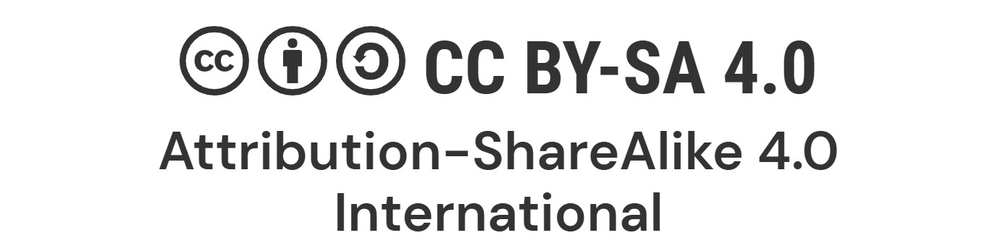

Autoría
Esta propuesta didáctica ha sido elaborada por el docente Pablo Domínguez Sánchez, responsable del módulo de Aplicaciones Informáticas, incluyendo la selección de contenidos, actividades y recursos digitales utilizados a lo largo de la secuencia.
Asimismo, se hace constar la descripción general del recurso como situación de aprendizaje orientada a la mejora de la documentación y presentación de procesos artesanales mediante herramientas digitales.
El material se comparte bajo una licencia de uso educativo que permite su consulta y utilización en contextos de enseñanza, respetando siempre la autoría original. En este apartado también se incluirá el enlace o botón de descarga del archivo editable del proyecto, para facilitar su reutilización y adaptación en otros contextos educativos.

Créditos
Las imágenes utilizadas en este entorno digital de aprendizaje proceden de diferentes fuentes, incluyendo bancos de imágenes libres de derechos, recursos educativos y materiales con licencias que permiten su uso con fines didácticos.
En todos los casos se ha procurado respetar la autoría original, indicando y reconociendo la procedencia de los materiales, así como su uso conforme a las condiciones de cada licencia.
Foto de Markus Winkler en Unsplash
Foto de Markus Winkler en Unsplash